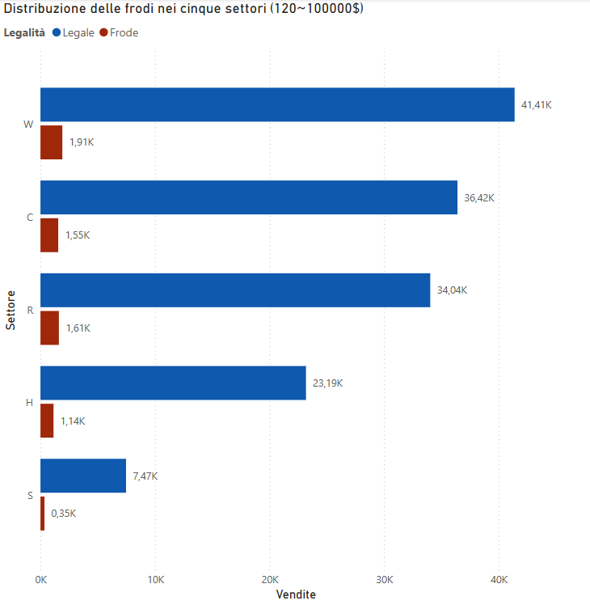

WORK IN PROGRESS!

Questa pagina è ancora in fase di sviluppo.
Se dovessi avere qualche perplessità, non esitare a contattarci!
Power BI: Analisi Predittiva delle Frodi
In questa sezione, dal punto di vista progettuale, sarà presente la dashboard strategica sviluppata per ARDEO S.H. - FTRS, progettata per identificare e analizzare pattern di frode attraverso:
- Mappe geografiche interattive per visualizzare hotspot frodi
- Trend temporali avanzati (giornaliero/settimanale)
- Correlazioni chiave tra profilo utente, importo transazione e metodo di pagamento
- Filtri dinamici per simulazioni scenario-based
Il caso di studio si basa sull'integrazione tra il dataset IEEE-CIS Fraud Detection e dati utente sintetici, con aggiornamento automatico via pipeline Azure.
Ci tengo ad esplicitare che con i mezzi attualmente a mia disposizione posso utilizzare solo i tools presenti nel pacchetto Power BI Desktop, quindi non posso utilizzare le funzionalità avanzate.
Analisi delle Frodi su 5 Settori
Questo grafico rappresenta un esempio di visualizzazione ottenibile in Power BI Desktop analizzando i dati CSV processati dalla pipeline ETL.
- Asse X: Vendite nel settore
- Asse Y: Suddivisione dei 5 settori: Wholesale (W), Consumer (C), Retail Banking (B), Healthcare (H) e Services (S)
- Filtri applicati: Transazioni superiori a 120$ e inferiori a 100`000$
